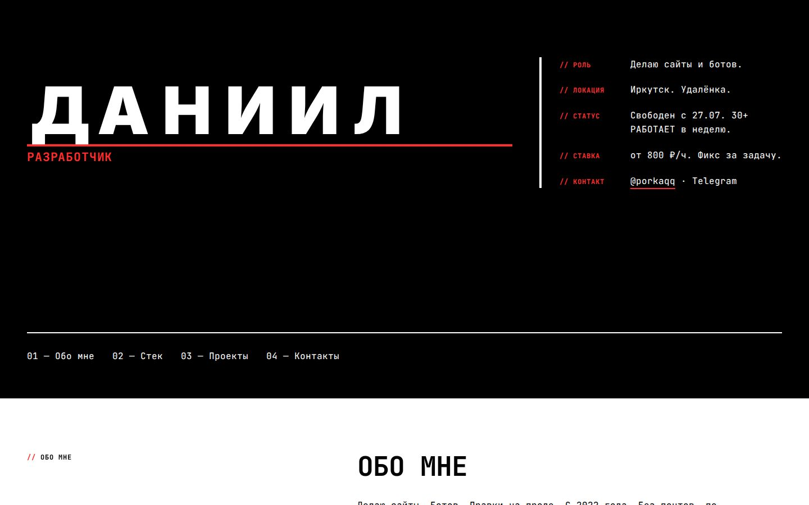
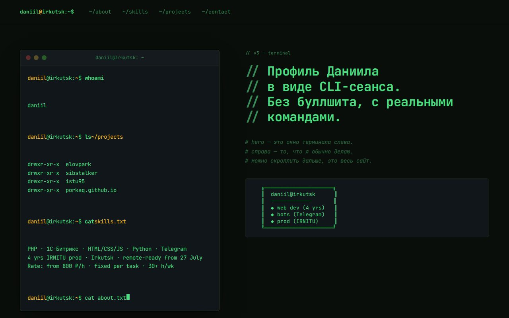
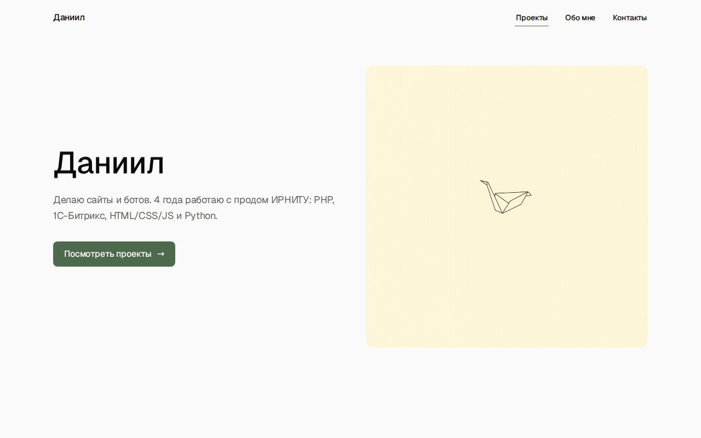

Brutalist Motion
Объединение scroll-анимаций (reveal секций) и wow-фич (scramble h1, magnetic CTA, hover-tilt карточек).
→ Открыть v1-brutalist-motionТри standalone-страницы одного портфолио. Контент, контакты и проекты одинаковые. Тон, типографика, цвет и анимации — разные. К каждой базовой странице есть animated-вариант: scroll-эффекты, hover-микро-анимации, scroll-typing, scramble, magnetic. Это каталог для выбора финального варианта, не финальный сайт.
v1-brutalist (base), v1-brutalist-scroll и v1-brutalist-wow выведены в inactive 22 июля 2026 — сохранены в репо как negative references (motion-редакция оказалась сильнейшей, остальные стали избыточны). V2 Editorial, V5 Swiss Grid и V6 Playful также inactive с этой же даты.

Объединение scroll-анимаций (reveal секций) и wow-фич (scramble h1, magnetic CTA, hover-tilt карточек).
→ Открыть v1-brutalist-motion
Интерактивный терминал в hero: help, ls, tree, cat, head, wc -l, история команд и Tab-completion. Команды читают виртуальные файлы портфолио и прокручивают к соответствующим секциям; ниже сохраняется scroll-typing.
→ Открыть v3-terminal-shell
«Даниил» собирается посимвольно (split-chars), CTA магнитится за курсором через rAF, карточки приподнимаются с accent-rail. Pill-stagger на тегах, underline-slide на ссылках. Сохраняет лимит тени ≤0.08 и палитру moss.
→ Открыть v4-minimalist-hover